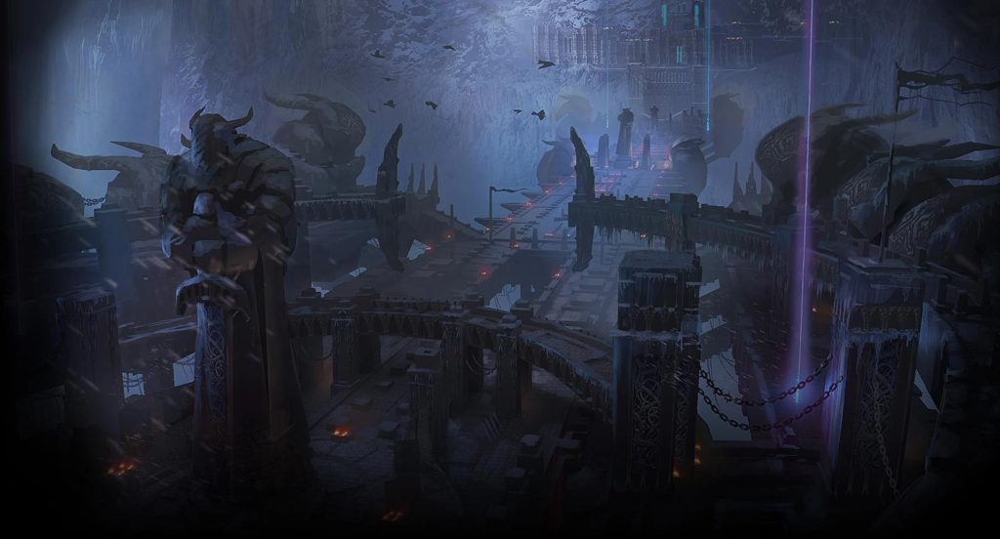
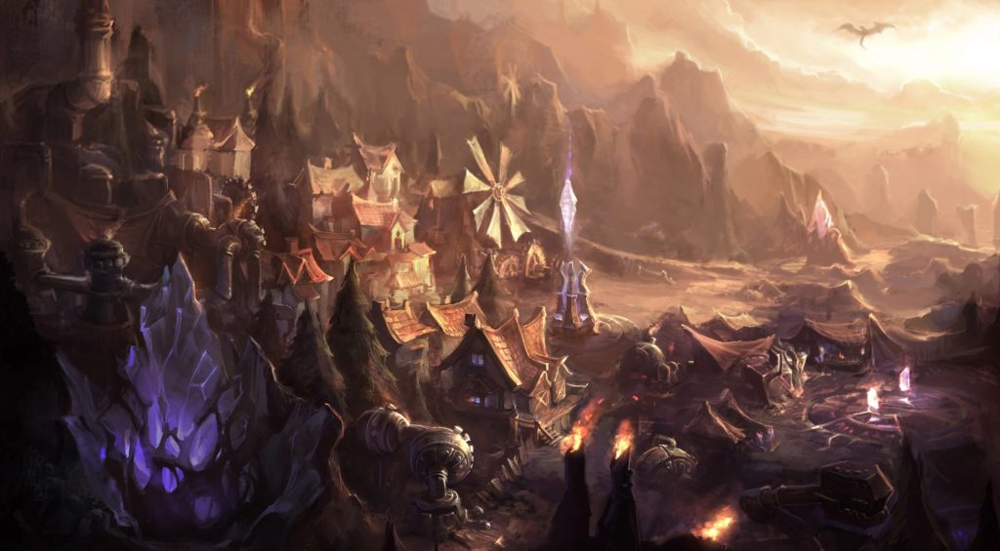
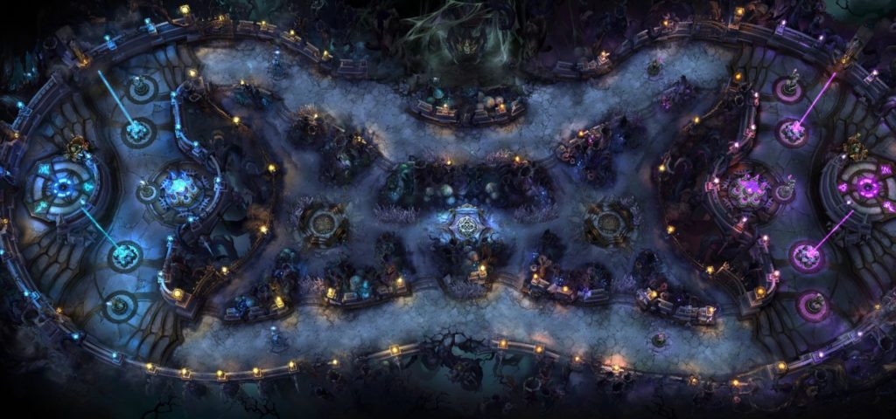

Grieta del Invocador

La Grieta del Invocador, el mapa más antiguo y popular de League of Legends, ha estado en el juego desde que se estrenó en 2009. La Grieta ha tenido incontables cambios durante los años, pero no recibió su mayor rework visual hasta 2015. Desde entonces el mapa sigue como siempre y ha albergado a millones de jugadores y partidas de League of Legends durante los últimos tiempos. Cuando League of Legends estaba en su infancia, Riot Games imaginó una gran cantidad de mapas para que los jugadores compitieran, pero a lo largo de la gran historia del juego la Grieta del Invocador ha sido lo suficientemente digna como para ser el único mapa competitivo del título. Todos los partidos profesionales de League of Legends han tenido lugar en la Grieta y por el momento no hay ninguna duda que indique que esto vaya a cambiar.
Abismo de los Lamentos
El Abismo de los Lamentos es fácilmente el mapa más sencillo de League of Legends ya que sólo cuenta con una línea donde los jugadores pueden competir. Gracias a la naturaleza cerrada y enclaustrada del mapa los jugadores se ven obligados constantemente a encontrarse y pelear en equipo sin cesar, algo que provoca que en el Abismo de los Lamentos se generen los momentos más memorables y creativos de League of Legends. Actualmente el modo de juego ARAM, que sólo se disputa en el Abismo de los Lamentos, sigue siendo uno de los modos más populares de League of Legends. El Abismo de los Lamentos se estrenó en el juego en 2013 y su sencillez provoca que los jugadores siempre vuelvan a por más.
Cicatriz de Cristal
La Cicatriz de Cristal se usó principalmente para el modo de juego Dominación cuando estuvo disponible de 2011 a 2016. Dominación, un modo de juego basado en el control de bases, fue eliminado del título hace cinco años, pero la Cicatriz de Cristal se ha mantenido como un mapa disponible para los jugadores de League of Legends que querían usarlo para partidas personalizadas. Finalmente Riot decidió eliminar el mapa de League of Legends al completo. Sin embargo, su fundación sigue siendo parte del código del juego ya que aparece ocasionalmente para modos de juego rotativos.
Bosque Retorcido
Aunque Riot Games eliminó el Bosque Retorcido de League of Legends en 2019, su legado vive como uno de los mapas más queridos del juego. Al ser el mapa principal para el modo de juego de tres para tres, el Bosque Retorcido le daba a los jugadores una pequeña versión de League of Legends a los jugadores con la misma acción y estrategia. Además, el mapa era bastante más pequeño que la Grieta del Invocador, por lo que sus partidas tenían una duración media de 15 o 20 minutos. El Bosque Retorcido también fue el hogar del único modo de juego competitivo que había más allá de la Grieta del Invocador. Las partidas de tres contra tres no contaban con un grado de exigencia tan grande como las de la Grieta del Invocador, pero el Bosque siguió albergando algunos de los encuentros más clásicos mientras siguió en pie.